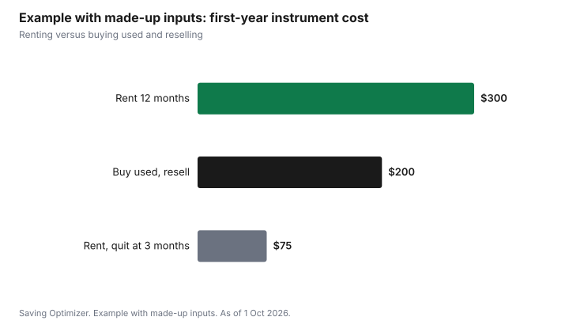

Kids · Canada
Music Lessons in Canada: Lesson Costs, Renting vs Buying an Instrument
Music lessons in Canada cost three things: the lessons, the instrument and the extras. Lessons can be private, group, through a community music school or through the school band. For the instrument, renting or a rent-to-own plan makes sense for the first year, when you do not yet know if your child will stick with it; buying used can make sense once they have. Add books, a stand, maintenance and any exam or festival fees. Some provinces' arts credits can return part of the lesson fee.
Key takeaways
- Compare lessons by cost per minute: private, group, community music school or school program.
- Rent or rent-to-own for the first year. Ask how much rent is credited toward buying, and for how long.
- Buying used can make sense after the first year. Have a teacher check it before you pay.
- Add the extras: books, a stand, strings or reeds, tuning, and exam or festival fees.
- Example with made-up inputs: renting a violin for a year at $300 versus buying a used one for $450 and reselling it for $250.
Lesson options
| Option | Format | Good for |
|---|---|---|
| Private lessons | One student, one teacher, often 30 to 60 minutes | Steady progress and exam preparation |
| Group lessons | Several students | Trying an instrument at lower cost |
| Community music school | Private or group, often with bursaries | Structured programs and ensembles |
| School band or strings | Part of the school day or after school | Low cost; instrument sometimes provided |
Ask about the cancellation policy, make-up lessons, and whether you pay by the term or by the lesson. A term fee that includes a recital or group class can be better value than the per-lesson price suggests.
Rent, rent-to-own, used or new
Many music stores offer rentals, often with a rent-to-own option where part or all of the rent paid is credited toward buying the instrument. Ask how much is credited, for how long, whether damage coverage is included, and how to return it. Children's string instruments come in fractional sizes, so a rental can be swapped for the next size as the child grows.
Buying used can cost less once the child is committed. Have the teacher look at it before you pay, because repairs on a cheap instrument can cost more than it is worth. A new entry-level instrument comes with a warranty and a return window; read both.
| Path | Upfront | Watch for |
|---|---|---|
| Rental | Monthly or term fee | Damage coverage; size swaps |
| Rent-to-own | Monthly fee, credited toward purchase | Credit percentage and time limit |
| Used | One payment | Condition; repair costs; teacher check |
| New | One payment | Warranty; return window |
The extras
Budget for method books, a music stand, rosin or reeds, replacement strings, tuning for a piano, and maintenance. Exams and festivals have entry fees. These lines are small one at a time and add up over a year.
Help with the cost
Community music schools often have bursaries. Some charities fund arts activities for children. Manitoba's children's arts credit, Nova Scotia's children's sports and arts credit, Yukon's children's arts amount and Quebec's children's activities credit can apply to eligible lessons; the activity credits guide has the rules. The fee assistance guide covers charitable grants.
Step by step: starting lessons for less
- Ask your child's school about band or strings programs, which may lend or rent instruments at low cost.
- Ask local community music schools and recreation centres about group classes and bursaries.
- Book a trial lesson with a private teacher before paying for a term.
- Rent the instrument for the first months, choosing a plan that credits rent toward purchase.
- Ask the teacher what size and quality level to look for before you buy.
- Track the year's extras so you can budget the second year.
- Keep receipts for any provincial arts credit.
Questions for a rental contract
| Question | Why it matters |
|---|---|
| How much rent is credited toward buying, and for how long? | Credit may drop or end after a set time |
| Is damage coverage included or extra? | Repairs can be costly |
| Can my child move up a size? | Children's string instruments come in fractional sizes |
| How do I return it, and is there a minimum term? | Avoid paying after a child quits |
| What is the buyout price? | Compare with buying used |
Exams and festivals
Graded exam programs, such as those from national conservatories, are optional. They give structure and a goal, but each exam has a fee and may require theory study. Local music festivals also charge entry fees. Ask the teacher whether exams fit your child's goals before budgeting for them. In some provinces, high school credits can be earned through graded music exams; ask your school or education ministry.
Common mistakes
- Buying a cheap new instrument that is hard to play and costly to set up.
- Committing to a full year of lessons before a trial.
- Forgetting that a child will outgrow a fractional-size instrument.
- Ignoring the school's band program, which may cost far less.
- Not asking about cancellation and make-up lesson policies.
Example with made-up inputs: the first-year instrument
These numbers are an example with made-up inputs, not store prices. Renting a violin costs $25 a month, $300 for a year, with the child moving to a bigger size free. Buying a used violin costs $450, and reselling it after a year at $250 makes the net cost $200, but the child needs a bigger size, which means buying again. If the child quits in month three, renting has cost $75.
| Path | Paid | Recovered | Net first year |
|---|---|---|---|
| Rent for 12 months | $300 | $0 | $300 |
| Buy used, resell after a year | $450 | $250 | $200 |
| Rent, quit after 3 months | $75 | $0 | $75 |

Sources
- Provincial children's activity and arts credits: Revenu Québec; Manitoba Finance; CRA Nova Scotia 5003-PC; CRA Yukon 5011-PC.
- Store rental contracts set credit, damage coverage and return terms; none is quoted here.
- Every price in the example table and chart is a made-up input.
Frequently asked questions
Should I rent or buy an instrument for my child?
Renting or rent-to-own usually makes sense for the first year, when you do not know if the child will continue and string sizes change. Buying used can make sense once the child is committed; have the teacher check it first.
How does rent-to-own work for instruments?
Part or all of the rent paid is credited toward buying the instrument, usually within a time limit. Ask the store how much is credited, for how long, and whether damage coverage is included.
Are group music lessons cheaper than private lessons?
Usually per student, yes. Compare cost per minute and what is included, such as recitals or ensemble time. Private lessons suit steady progress and exam preparation.
Can music lessons be claimed on taxes in Canada?
Some provinces have credits that can apply: Manitoba's children's arts credit, Nova Scotia's children's sports and arts credit, Yukon's children's arts amount and Quebec's children's activities credit. Check the rules for your province.
What extra costs come with music lessons?
Method books, a stand, strings or reeds, maintenance, piano tuning, and exam or festival entry fees.
Are music exams required?
No. Graded exams are optional. They give structure and goals but add fees and theory study. Ask the teacher whether they fit your child.
What should I ask before renting an instrument?
How much rent is credited toward buying and for how long, whether damage coverage is included, whether sizes can be swapped, the return rules and the buyout price.
Researched and drafted with AI assistance and fact-checked against official Canadian sources. How we create content.
Disclosure: Music stores, rental plans and schools are described as offer types; none is named or ranked. Saving Optimizer may earn a commission if a partner link is added later; no partnership is claimed. Education only.